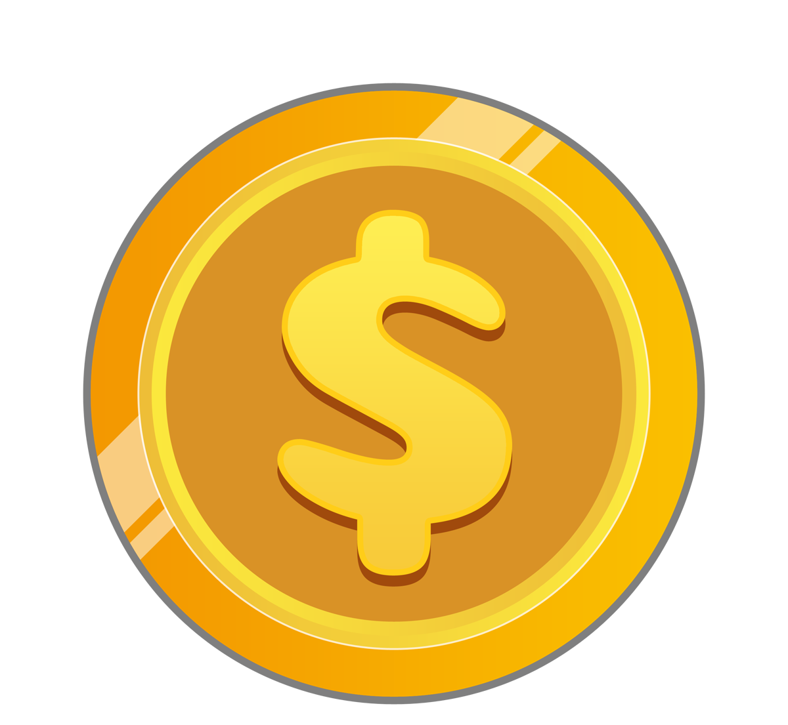

Flappy Bird
Scratch

Para o jogo não acabar na primeira batida, vamos criar um sistema de corações. Mas cuidado: sem um "tempo de respiro", o pássaro perderia todas as vidas em um milissegundo!
O bloco Repita cria o "Tempo de Invencibilidade". Enquanto o pássaro pisca, o código está ocupado e não consegue tirar mais vidas, dando tempo para o jogador se recuperar do susto!
Agora o nosso Juiz (ou o próprio Pássaro) precisa vigiar se o estoque de vidas chegou ao fim:
Um jogo fica muito mais divertido quando temos algo para coletar! Vamos criar moedas que surgem entre os canos para aumentar nossa pontuação.
As moedas devem se mover exatamente na mesma velocidade que os canos. Se o cano anda -5 passos, a moeda também deve andar!

Link do Quiz: Clique aqui para abrir o desafio interativo.